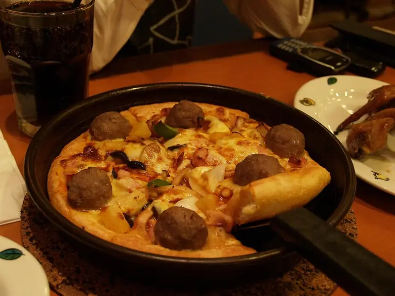

Фото: Mohd Fahmi Mohd Azmi from kemaman, malaysia, CC BY-SA 2.0

Пицца на сковороде из готового теста
Толстая пицца с моцареллой, ветчиной и томатным соусом на сковороде
35 мин3 порц.624 ккал на порциюБ 25 · Ж 28 · У 70Итальянская кухня
Продукты на 3 порц.
- Тесто дрожжевое готовое400 г
- Томаты в собственном соку150 г
- Чеснок1 зуб.
- Сушёные травы1 ч. л.
- Моцарелла200 г
- Ветчина по желанию120 г
- Оливковое масло1,5 ст. л.
- Соль1 щеп.
- Мука пшеничная1 ст. л.
Как готовить
- Тесто достаньте из холодильника за 30 минут, чтобы согрелось.
- Соус: разомните томаты вилкой с давленым чесноком, солью и сушёными травами.
- Смажьте холодную сковороду диаметром 26-28 см оливковым маслом. Растяните тесто руками, подсыпая муку, и выложите в сковороду с бортиками.
- Распределите соус, оставив края свободными. Выложите тёртую или рваную моцареллу и ветчину.
- Накройте крышкой и жарьте на слабом огне 12-15 минут.
- Пицца готова, когда сыр расплавился, а дно стало золотистым и хрустящим, приподнимите край лопаткой и проверьте.
Совет. Огонь только слабый, иначе низ сгорит раньше, чем пропечётся тесто. Если пар капает с крышки, протрите её посередине.